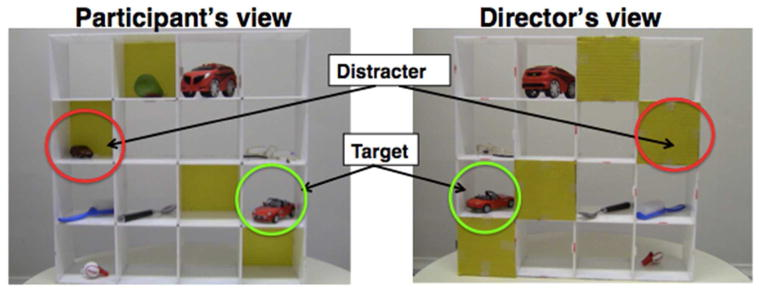
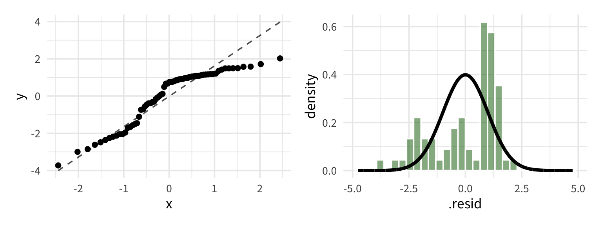
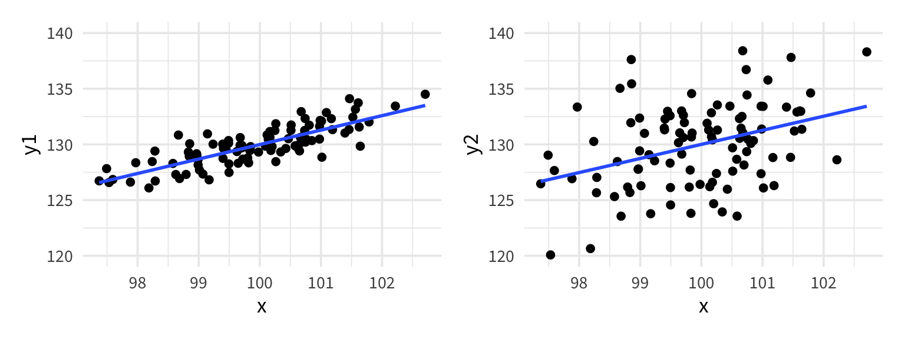

Morph Distance Placed Removed
1 light 0.0 56 17
2 dark 0.0 56 14
3 light 7.2 80 28
4 dark 7.2 80 20
5 light 24.1 52 18
6 dark 24.1 52 22
7 light 30.2 60 9
8 dark 30.2 60 16
9 light 36.4 60 16
10 dark 36.4 60 23
11 light 41.5 84 20
12 dark 41.5 84 40
13 light 51.2 92 24
14 dark 51.2 92 39Overdispersion and the Quasibinomial model
Day 23
moths from last homework
Binomial logistic regression model
binomial_glm <- glm(Y/n ~ predictors, weights = n,
data = dataset,
family = "binomial")moth_glm <- glm(Removed/Placed ~ morph*distance, weights = Placed,
data = moths,
family = "binomial")# A tibble: 4 × 5
term estimate std.error statistic p.value
<chr> <dbl> <dbl> <dbl> <dbl>
1 (Intercept) -1.13 0.198 -5.70 0.0000000117
2 morphlight 0.411 0.274 1.50 0.134
3 distance 0.0185 0.00565 3.28 0.00105
4 morphlight:distance -0.0278 0.00809 -3.44 0.000588 Model assumptions
Binomial counts: \(Y_i \sim \text{Binom}(m_i, \pi_i)\)
Independence: observations are independent (\(Y_i\)’s are independent and each 1/0 that contributes to \(Y_i\) is independent)
Linearity: the log odds is a linear function of the predictors
Variance structure: the variance of a binomial random variable is \(n \pi (1 - \pi)\)
\(\Longrightarrow\) so the variance of \(Y_i\) is \(m_i \pi_i (1 - \pi_i)\) (not constant!)
Goodness-of-fit test
Deviance can be used to assess the overall fit of a binomial logistic regression model
| Observed Count | Predicted P(Success) | True P(Success) | Predicted Count |
|---|---|---|---|
| \(Y_i\) | \(\widehat{\pi}_i\) | \(\pi_i\) | \(m_i \widehat\pi_i\) |
Deviance: \(D = 2 \sum \left[ Y_i \log \left( \dfrac{Y_i}{m_i\widehat{\pi}_i} \right) + (m_i - Y_i) \log \left( \dfrac{m_i - Y_i}{m_i - m_i \widehat{\pi}_i} \right) \right]\)
\(D \overset{\cdot}{\sim} \chi^2\) with \(\text{d.f.}= n-(p+1)\), if the model is correct and all \(m_i\) are large enough (>5)
\(n =\) # of binomial observations (# of proportions, not # of moths)
Goodness-of-fit test
(the model is adequate)
H0: \({\rm logit}(\pi_i) = \beta_0 + \beta_1 x_{1i} + \cdots + \beta_p x_{pi}\)
(the model is inadequate)
Ha: \({\rm logit}(\pi_i) = \alpha_i\)
Call:
glm(formula = Removed/Placed ~ Distance * Morph,
family = binomial, data = case2102, weights = Placed)
Null deviance: 35.385 on 13 degrees of freedom
*Residual deviance: 13.230 on 10 degrees of freedom1- pchisq(13.230, 10)[1] 0.2110951Note: This test is only valid for the binomial logistic regression, it is not valid for binary logistic regression.
Communication Development Study
Our proposal, thus, is about the social consequences of growing up in a multilingual versus monolingual environment, rather than the impact of being bilingual per se. We propose that routine exposure to people who speak different languages provides children with a formative communication environment that is fundamentally different from that experienced by monolingual children. Exposure to diverse socio-linguistic environments could grant children with a profound understanding of differences between people’s perspectives, naturally enhancing their communicative abilities.
Fan, S. P., Liberman, Z., Keysar, B., & Kinzler, K. D. (2015). The Exposure Advantage: Early Exposure to a Multilingual Environment Promotes Effective Communication. Psychological science, 26(7), 1090–1097. https://doi.org/10.1177/0956797615574699
“I see a small car. Can you move the small car under the spoon?”

Data
subject age sex language kbit maternal_ed ppvt success trials
1 1 5.0 0 Monolingual 107 1 128 4 4
2 3 4.4 1 Monolingual 112 1 104 3 4
3 5 4.0 0 Bilingual 112 1 111 1 4
4 6 5.1 0 Monolingual 110 0 105 0 4
5 7 5.0 0 Bilingual 116 1 119 4 4
6 8 6.3 0 Monolingual 92 1 122 1 4
7 9 6.3 0 Monolingual 83 1 119 1 4
8 10 4.0 0 Monolingual 121 1 136 1 4
9 11 4.0 0 Monolingual 121 1 129 1 4
10 12 6.3 1 Monolingual 124 1 113 2 4
11 13 4.8 0 Bilingual 107 1 106 4 4
12 14 4.7 1 Exposed 105 1 104 2 4
13 18 4.6 1 Exposed 94 1 106 4 4
14 19 5.3 0 Monolingual 104 0 80 0 4
15 20 5.0 1 Monolingual 131 1 117 4 4
16 21 4.1 1 Exposed 63 1 96 4 4
17 24 4.2 0 Monolingual 110 1 134 4 4
18 27 4.1 1 Exposed 130 1 126 4 4
19 28 4.4 0 Bilingual 137 1 139 4 4
20 30 4.1 0 Bilingual 101 1 113 4 4
21 32 4.5 1 Bilingual 105 1 129 1 4
22 33 6.2 1 Exposed 96 1 129 4 4
23 34 4.6 0 Monolingual NA 1 NA 0 4
24 35 6.3 1 Exposed 89 0 109 4 4
25 36 6.0 0 Bilingual 122 1 108 4 4
26 37 6.6 1 Bilingual 100 1 94 1 4
27 38 4.5 1 Exposed 121 0 88 4 4
28 39 5.3 0 Exposed 92 1 98 3 4
29 40 6.5 1 Exposed 92 0 127 0 4
30 41 6.6 1 Bilingual 133 0 90 4 4
31 42 4.3 1 Monolingual 99 1 74 2 4
32 43 6.5 0 Monolingual 85 1 109 1 4
33 44 5.9 1 Bilingual 115 1 102 4 4
34 46 6.5 0 Bilingual 109 1 98 1 4
35 48 5.9 0 Monolingual 83 0 NA 2 4
36 49 6.6 0 Exposed 92 0 94 2 4
37 50 5.5 1 Bilingual 103 1 112 4 4
38 51 5.3 1 Exposed 97 1 107 2 4
39 52 5.6 0 Bilingual 127 0 113 2 4
40 53 6.1 1 Monolingual 86 0 119 1 4
41 55 6.4 1 Exposed 101 1 128 0 4
42 56 5.4 1 Exposed 103 1 111 4 4
43 57 6.0 0 Monolingual 86 0 116 2 4
44 58 6.4 1 Monolingual 106 1 122 3 4
45 59 5.2 0 Exposed 110 1 117 4 4
46 60 6.6 1 Exposed 109 1 132 0 4
47 61 4.0 1 Exposed 118 1 124 4 4
48 62 5.6 1 Exposed 118 1 116 4 4
49 63 6.4 0 Bilingual 106 1 106 2 4
50 64 4.3 1 Bilingual 127 1 122 3 4
51 65 4.7 1 Exposed 109 1 120 1 4
52 66 4.2 1 Monolingual 62 0 86 4 4
53 67 4.8 1 Exposed NA 1 NA 4 4
54 68 6.1 0 Bilingual 86 1 122 2 4
55 69 6.9 1 Bilingual 121 1 112 4 4
56 70 5.5 1 Monolingual 134 1 134 0 4
57 71 4.1 0 Bilingual 118 0 101 4 4
58 72 6.2 1 Bilingual 133 0 107 4 4
59 74 4.6 1 Monolingual 105 1 142 3 4
60 75 6.1 0 Exposed 93 0 81 4 4
61 76 5.2 0 Exposed 100 1 94 4 4
62 77 5.2 0 Exposed 97 1 113 3 4
63 78 6.8 1 Monolingual 113 1 116 2 4
64 79 5.1 0 Bilingual 110 0 98 4 4
65 81 5.3 1 Bilingual 104 1 130 4 4
66 82 5.1 0 Exposed 94 1 115 4 4
67 83 6.5 0 Exposed 98 1 106 4 4
68 84 5.5 0 Bilingual 112 0 107 4 4
69 86 5.4 1 Bilingual 103 0 109 3 4
70 87 5.1 1 Monolingual 107 1 108 4 4
71 88 5.0 1 Monolingual 97 1 126 3 4
72 89 5.0 1 Bilingual 94 1 104 2 4What is \(Y\)? What is \(n\)? What are the possible predictors? What is the primary predictor we want to make inference about?
Binomial model
lang_glm <- glm(success/trials ~ sex + kbit + ppvt +
maternal_ed + age + language,
data = language,
family = "binomial",
weights = trials)# A tibble: 8 × 5
term estimate std.error conf.low conf.high
<chr> <dbl> <dbl> <dbl> <dbl>
1 (Intercept) 4.82 1.76 1.48 8.41
2 sex 0.185 0.282 -0.369 0.740
3 kbit 0.00953 0.0102 -0.0107 0.0296
4 ppvt -0.0185 0.0108 -0.0402 0.00238
5 maternal_ed 0.142 0.351 -0.554 0.829
6 age -0.515 0.165 -0.845 -0.196
7 languageExposed -0.0167 0.377 -0.759 0.724
8 languageMonolingual -1.07 0.353 -1.77 -0.385 . . .
→ Relative to Bilingual children, after accounting for all other variables in the model, monolingual children are worse at the task
Goodness of fit test
summary(lang_glm) Null deviance: 197.54 on 68 degrees of freedom
Residual deviance: 167.35 on 61 degrees of freedom
(3 observations deleted due to missingness)
AIC: 237.721 - pchisq(167.35, df = 61)[1] 7.557399e-12. . .
Indicates the model is inadequate
If model is correct, Pearson residuals should be approximate N(0,1)
lang_aug <- augment(lang_glm, type.residuals = "pearson")
mean(lang_aug$.resid)[1] -0.002170125sd(lang_aug$.resid)[1] 1.452421
. . .
→ These Pearson residuals are too variable
In linear regression, the mean model (\(\mu_y\)) and the variance term (\(\epsilon\)) are independent. We can have points that are tightly clustered along the line or widely spread and both models are equally “valid”

In binomial logistic regression, the variance term is related to the mean model through a mathematical relationship:
\[\mu(Y) = n\pi \quad Var(Y) = n\pi(1-\pi)\]
Overdispersion occurs when the actual, observed variance in our data is significantly larger than what we’d expect from these formulas
Diagnosing overdispersion
summary(lang_glm)(Dispersion parameter for binomial family taken to be 1)
Null deviance: 197.54 on 68 degrees of freedom
Residual deviance: 167.35 on 61 degrees of freedom
(3 observations deleted due to missingness)
AIC: 237.72Ad-hoc dispersion test: \(\text{disp} = \widehat\psi = \frac{\text{Residual Deviance}}{\text{degrees of freedom}} = \frac{167.35}{61} \approx 2.7\)
- \(\widehat\psi \approx 1\): not overdispersed
- \(\widehat\psi >> 1\) overdispersed
Fixing overdispersion: the quasibinomial family
lang_qglm <- glm(success/trials ~ sex + kbit + ppvt +
maternal_ed + age + language,
data = language,
family = "quasibinomial",
weights = trials)(Dispersion parameter for quasibinomial family taken to be 2.351658)
Null deviance: 197.54 on 68 degrees of freedom
Residual deviance: 167.35 on 61 degrees of freedom
(3 observations deleted due to missingness)
AIC: NAR uses a slightly different formula to calculate dispersion parameter; should not make a difference in deciding whether model is overdispersed
What changed?
Binomial:
# A tibble: 8 × 3
term estimate std.error
<chr> <dbl> <dbl>
1 (Intercept) 4.82 1.76
2 sex 0.185 0.282
3 kbit 0.00953 0.0102
4 ppvt -0.0185 0.0108
5 maternal_ed 0.142 0.351
6 age -0.515 0.165
7 languageExposed -0.0167 0.377
8 languageMonolingual -1.07 0.353 Quasibinomial:
# A tibble: 8 × 3
term estimate std.error
<chr> <dbl> <dbl>
1 (Intercept) 4.82 2.69
2 sex 0.185 0.433
3 kbit 0.00953 0.0157
4 ppvt -0.0185 0.0166
5 maternal_ed 0.142 0.539
6 age -0.515 0.253
7 languageExposed -0.0167 0.578
8 languageMonolingual -1.07 0.541 Back to t-distributions
\(\widehat \psi\) is dispersion parameter from R
\[SE_{\text{quasi}}(\widehat\beta) = \sqrt{\hat \psi} SE_{\text{binom}}(\widehat\beta)\]
Test statistic:
\[t = \frac{\widehat \beta - 0}{SE(\widehat \beta)} =\frac{\widehat \beta - 0}{\sqrt{\hat \psi} SE_{\text{binom}}(\widehat\beta)} \]
Reference distribution
\(t_{n-(p+1)}\) when \(H_0\) is true (p = number of predictors)
Back to F tests
Hypotheses:
\(H_0: \beta_i = \beta_j = ... = 0 \quad\) vs. \(\quad H_a: \text{at least 1 } \beta \ne 0\)
Test statistic:
\[F = \frac{(\text{Deviance}_{red} - \text{Deviance}_{full})/\text{n coefs}}{\text{Dispersion Parameter}} = \frac{\Delta}{\widehat\psi}\]
Reference distribution:
\(F_{df_1, df_2}\), where \(df_1=\) the number of extra coefficients and \(df_2\) = n - number of coefficients in full model
Is language necessary in the model?
\(H_0: \beta_6 = \beta_7 = 0 \quad H_A:\) at least one \(\ne 0\)
reduced_qglm <- glm(success/trials ~ sex + kbit + ppvt +
maternal_ed + age,
data = language,
family = "quasibinomial",
weights = trials)
anova(reduced_qglm, lang_qglm, test = "F")Analysis of Deviance Table
Model 1: success/trials ~ sex + kbit + ppvt + maternal_ed + age
Model 2: success/trials ~ sex + kbit + ppvt + maternal_ed + age + language
Resid. Df Resid. Dev Df Deviance F Pr(>F)
1 63 180.58
2 61 167.35 2 13.237 2.8145 0.06774 .
---
Signif. codes: 0 '***' 0.001 '**' 0.01 '*' 0.05 '.' 0.1 ' ' 1. . .
→ only significant at \(\alpha = .1\) level; weaker evidence that language background explains P(Success)
What about effect of monolinguism?
exp(confint(lang_qglm)) 2.5 % 97.5 %
(Intercept) 0.7790849 3.523281e+04
sex 0.5135667 2.828747e+00
kbit 0.9785628 1.041248e+00
ppvt 0.9490896 1.013455e+00
maternal_ed 0.3930132 3.315421e+00
age 0.3576912 9.715270e-01
languageExposed 0.3130941 3.078133e+00
languageMonolingual 0.1148159 9.750352e-01→ We are 95% confident that the odds of success for monolingual children is somewhere between 2.5% to 89% smaller than for bilingual children, holding the other variables constant.
Strategy for binomial logistic regression:
- First, make sure data is grouped appropriately (each row is independent)
- Start by fitting
family = "quasibinomial"- If \(\psi > 1\), stick with it
- If \(\psi \approx 1\), doesn’t matter which one you choose
- If \(\psi \le 1\), switch to the binomial model